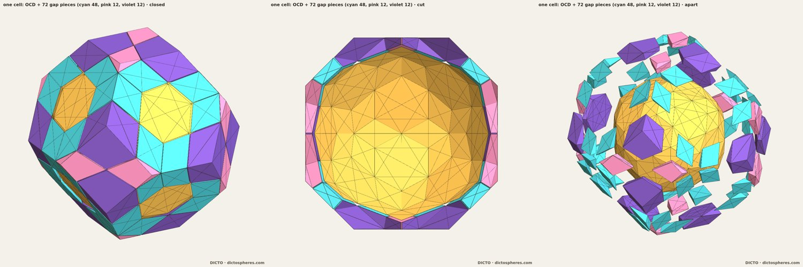
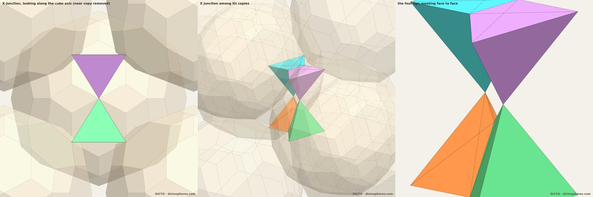
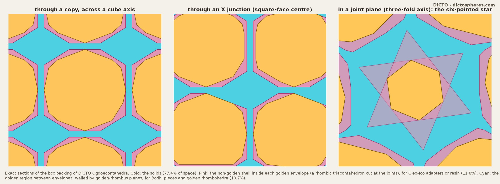
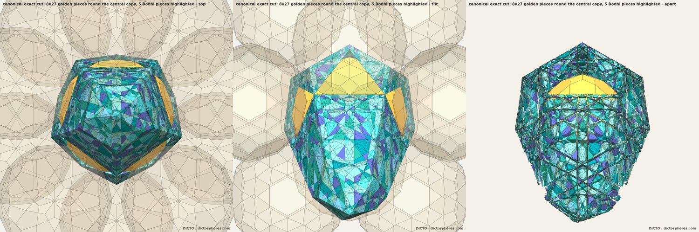
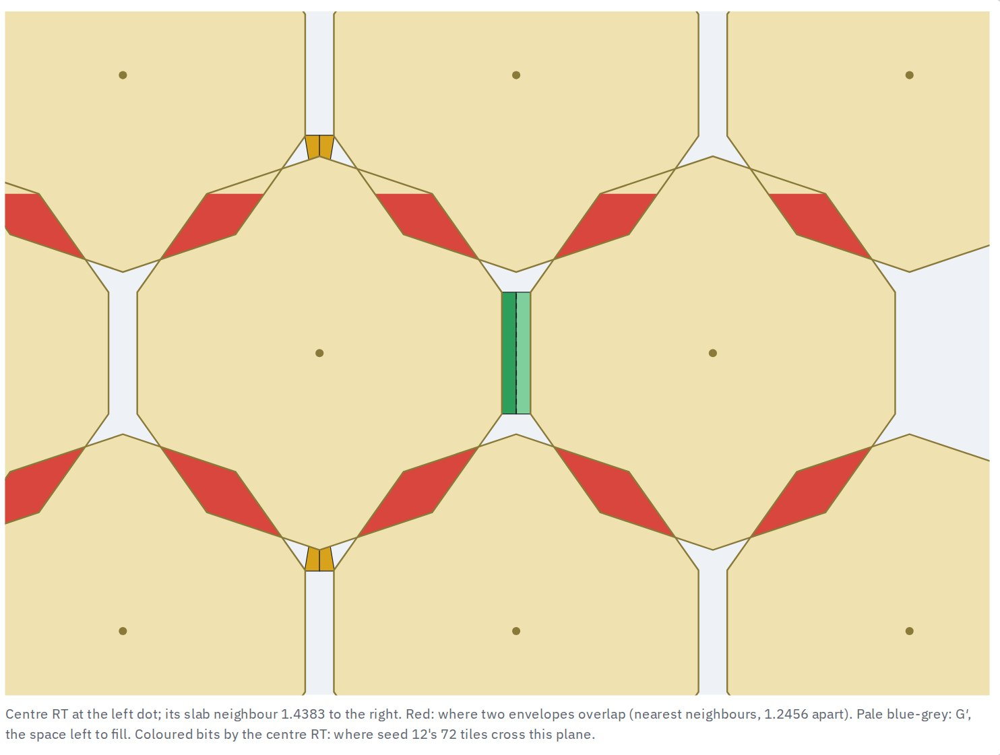
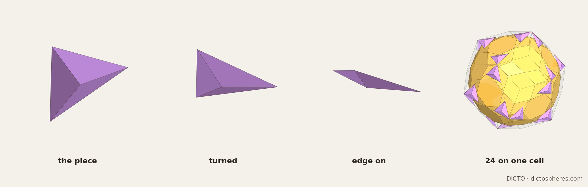
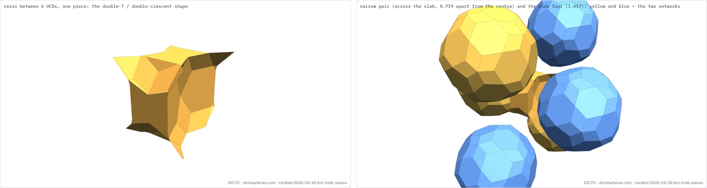
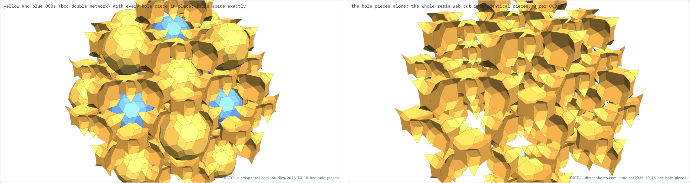

The gaps of the Ogdoecontahedron packing: an exact fill, limbs that cross in golden rhombi, why a canonical golden fill shatters, and the one adapter, the GBPC, that every golden fill needs; and DICTO's Bull-horns OG adaptor, one piece that fills the whole gap
The DICTO Ogdoecontahedron (OCD/OG) is the polar of the DICTO Hecatodihedron: 20 regular hexagons and 60 kites, exact in every coordinate. Joined face to face on a tetrahedral set of four hexagons, copies form a diamond network whose joints lie on a pyrochlore lattice; two such networks interpenetrate into a body-centred cubic (bcc) packing, every copy in the same orientation and touching eight neighbours through eight of its hexagons (DICTO DOI: 10.5281/zenodo.23404688). The pyrochlore lattice of corner-sharing tetrahedra is familiar from frustrated magnets (e.g. Okamoto et al. 2013), and bcc packings of icosahedral units are familiar from crystal chemistry: the 1/1 cubic approximants of icosahedral quasicrystals pack Tsai-type icosahedral clusters on a bcc lattice (Takakura et al. 2007; Deguchi et al. 2015). Dense packings of single polyhedra are surveyed by Torquato and Jiao (2009) and Damasceno, Engel and Glotzer (2012); the gaps that a polyhedral packing leaves, and how they might be filled, are the subject here, as they were for tetrahedra in Conway and Torquato (2006). The other 12 hexagons and all 60 kites face the gap.
The gap, exact. Each copy's Voronoi cell in the bcc packing is a truncated octahedron V, one of Fedorov's five parallelohedra (see Garber 2019), of volume 512/729 + 256√5/729. The OCD lies inside V and touches V's eight hexagons, which are the joints. So each copy's share of the gap is V − OCD = 18728/13851 − 6296√5/13851 ≈ 0.335695, 22.57% of space. Cones from the centre over the OCD's 72 free faces (12 hexagons and 60 kites) cut it into 72 convex pieces, and the pieces add up to the gap exactly, remainder 0 in ℚ(√5). They are of 3 kinds (Table 1, Figure 1). None of their faces is a rhombus.
| Pieces | Over | Corners | Faces | Volume (float) |
|---|---|---|---|---|
| 48 | kites | 6 | 2 triangles, 3 quadrilaterals | 0.001891 |
| 12 | kites | 11 | 6 quadrilaterals, 2 pentagons | 0.004409 |
| 12 | free hexagons | 13 | 4 triangles, 1 quadrilateral, 4 pentagons, 1 hexagon | 0.016001 |
Table 1. The cone fill of one copy's gap: 72 pieces of 3 kinds, summing exactly to V − OCD.

All copies share one orientation and are centrally symmetric, so the copy at a lattice point c has a hexagon exactly parallel, opposite and equally turned to each of our free hexagons. Sweeping a free hexagon onto it gives a hexagonal prism, a limb, right for the joints and oblique otherwise. Each free hexagon has exactly one limb that hits no other copy: length 0.522476, 2.196 times the hexagon edge, tilted 79.19° from the hexagon normal, its sides parallelograms of 0.2379 × 0.5225 (float). The 12 free hexagons give 6 limbs per copy, in 3 crossing pairs, one pair per cube axis, crossing at the square-face centres. Choosing one limb from each pair gives 3 collision-free limbs per copy, in 8 ways, filling 12.9% of the gap.
The crossing zone, exact. Where two limbs cross they share a convex zone, as pyrochlore tetrahedra share corners. Rebuilt from the exact network in ℚ(√5), with nothing rounded, the zone has 12 corners, each the exact meeting point of three limb planes, and 10 quadrilateral faces. Exactly two of them are golden rhombi: planar, four equal sides, diagonals in the ratio φ, the face of the rhombic triacontahedron and of both golden rhombohedra. Their edges run along five-fold axes (float). With each zone counted once, all six limbs fill 23.8% of the gap per copy (float). Where the limbs cross, the tips of the Cleo-Icos of §4 also meet; trimmed by the symmetric planes between the four facing hexagons, the four tips close into a ring, each touching its two neighbours face to face (Figure 2).

The golden rhombi of the crossing zone point to a golden fill: pieces bounded only by golden-rhombus planes, which are perpendicular to the 15 two-fold axes.

Does the golden region divide naturally into Bodhi pieces? A canonical answer cuts it by every golden plane that crosses it, so the result does not depend on the order of the cuts. In the cubic packing the region is crossed by golden planes in many directions that do not line up, and a first, non-canonical cut already gave 1,624 small pieces. The cubic lattice does not carry the golden module that makes the Bodhi Seed's pieces simple (the same cubic–icosahedral tension that relates cubic approximants and twins to icosahedral order: Pauling 1985; Prodan et al. 2017; Baake and Grimm 2013), so we repeated the cut in DICTO's five-fold chorus arrangement, where the copies sit on five-fold-symmetric positions (DICTO DOI: 10.5281/zenodo.23396361). There, exactly in ℚ(√5): the 41 central chorus sites are exact lattice points; 100 distinct envelope planes cross the central copy's cell; cutting by every one gives 16,204 cells, which sum exactly to the cell (2440/2187 + 1288√5/2187, remainder 0); 8,027 of them form the golden region, exact volume (22420 − 8972√5)/2187 ≈ 1.078188; the cut is exactly five-fold symmetric. The pieces fall into 561 kinds, and only 5 are Bodhi pieces, one five-fold orbit of the fine Vajra (Figure 4).
Conclusion. Even in the five-fold arrangement the golden region does not divide into Bodhi pieces; under the canonical cut it shatters. The Golden Bodhi Pyrochlore's golden fill needs either resin or a deliberate, non-canonical choice of Bodhi pieces and golden rhombohedra.

The canonical cut shatters, so we ask instead what any fill of the golden region G must contain. Per cell, G has exact volume (5984 − 2624√5)/729, 10.75% of space; each cut envelope K is a rhombic triacontahedron cut at its 8 joint planes, and no two overlap.
The obstruction. Every wall of G lies on an envelope, whose faces are 30 golden faces and 8 triangular joint faces. Across each joint face exactly one neighbour touches, its face the same triangle turned 180°. The two overlap in the central hexagon, exactly 2/3 of the triangle; the other 1/3 is three equilateral tips, which face the gap. So per cell G has 24 non-golden walls, the tips, in the four joint-plane directions, whose normals are the three-fold axes along the cube diagonals. Any dissection of G into finitely many pieces must cover each tip, a planar region of positive area, by piece faces lying in its own plane; a face in any other plane meets it only in a line. Every face of a golden rhombohedron and of each Bodhi piece is perpendicular to a two-fold axis, never to a three-fold one. So golden rhombohedra and Bodhi pieces alone cannot fill G. More sharply, where a tip meets the neighbour's golden face, G has a convex edge along a two-fold line opening at 20.905° (cos² = φ²/3), smaller than any golden piece's dihedral angle (36° or more).
The GBPC. On each tip, the joint plane and the golden planes through the tip's three edges bound a tetrahedron: base the tip, three golden sides, squared base and side edges 8/27 − 8√5/81 and 20/81 − 8√5/81, volume (−44 + 20√5)/2187. Its base over side, squared, is 2 + 2√5/5, the long diagonal of a golden rhombus over its edge: it is the rhombic triacontahedron's three-fold corner, cut through the corner's three neighbours. DICTO named it the GBPC, Golden Bodhi Pyrochlore Corner (Figure 5). Its squared side-to-base ratio, (5 − √5)/8, is the golden conjugate of the Cleo-Ico's (5 + √5)/8: it is the central pyramid of the great icosahedron, as the Cleo-Ico is of the icosahedron. All 24 per cell are congruent, and an exact test over 254 nearby pairs finds no overlaps.
What remains. G′ = G minus the GBPCs has exact volume 704/81 − 928√5/243 per cell, 10.22% of space. Its walls are all golden, and every edge runs along a five-fold axis, the edge direction of the golden rhombohedra. Its 48 convex edges per cell all open at 36° (float), the acute edge of the oblate rhombohedron, so no local obstruction is left.
No one-size fill. G′ is exactly space minus the union of the uncut rhombic triacontahedra: each overlaps its 8 joined neighbours (volume (−704 + 320√5)/729 each, no three overlapping), and each GBPC is the part of an envelope's corner beyond the joint plane that lies outside the neighbour. Three exact tests ask whether G′ tiles face to face by golden rhombohedra of one edge length λ. Corners: the 15 golden plane directions cut the space round each of the 48 corners per cell into 120 chambers, and every free cone is exactly a union of rhombohedron corner cones; no corner forbids a tiling. Module: all corners and their lattice translates lie in one coset of the Ammann–Kramer module at λ = φ/9 (in units of the cell), and at φ/(9k); this test alone can forbid nothing. Walls: summing corner signs over each of the 30 walls per cell (6 golden rhombi and 24 L-shaped hexagons), a dissection invariant that holds for any arrangement of faces, every wall is satisfied exactly when λ is a rational multiple of φ, coarsest φ/9. Count: applying the conjugation a + b√5 ↦ a − b√5 to the tiles (a perp-space volume count, checked exactly on one triacontahedron and on G′, where it gives 704/81 + 928√5/243) forces, per cell, 66 prolate and −30 oblate rhombohedra at λ = φ/9 (times k³ at φ/(9k)). The oblate count is negative at every allowed scale, so G′ has no face-to-face tiling by golden rhombohedra of one size, periodic or not. The computations are exact, and the counting step has been checked independently (study by Fable, FABLE-GBPC-COUNT-CHECK.md). In a face-to-face tiling the conjugation extends to a continuous piecewise-affine map whose deviation from a linear map is fixed on the walls and therefore bounded, since every point of G′ is near a wall. This bounds the error by O(N²) and forces the same counts as a periodic tiling would; the negative oblate count holds for every edge length in ℚφ·|v|. The same count reproduces the known Ammann–Kramer ratio of prolate to oblate, φ : 1, a check of the method on a known case.
No face-to-face fill of any sizes. A face-to-face tiling of G′ by golden rhombohedra cannot mix sizes: tiles sharing a face share its edges, all edges of a golden rhombohedron are equal, and G′ is connected. With the one-size count, G′ has no face-to-face tiling by golden rhombohedra of any sizes (exact; uses that G′ is connected, checked in float). Only tilings that are not face to face remain. For one size the wall test still forces the edge length to be a rational multiple of φ|v|; only the oblate has the 36° dihedral angle, so oblates must line the 48 convex edges, but the free 36° wedges continue past the ends of those edges, so edge lengths set no condition (exact).
Not face to face. A greedy exact build with golden rhombohedra of edges φ|v|/9 and φ|v|/18 fills 46.5% of G′ (184 tiles per bcc cell, overlap-free, exact; a float check of 200,000 points agrees) before no further corner admits a tile. Two exact constraints hold for any arrangement: every tile with a face on a wall of G′ has its edge in ℚφ·|v| (a Dehn-type argument on the walls, whose corners all have coordinates in ℚφ), and a periodic tiling cannot use only such edges, since its count requires −10/243 for the oblates. The Hadwiger edge invariant gives no obstruction: it vanishes on G′, because each pair of joined envelopes overlaps in exactly one oblate golden rhombohedron of edge 2φ|v|/9, so G′ is, as a valuation, a combination of zonotopes. Whether G′ has a tiling that is not face to face, perhaps with Bodhi pieces, remains undecided (study by Fable, studies/2026-10-16-ocd-pyrochlore/FABLE-GBPC-TILING.md, -2, -3 and -4, and the count check FABLE-GBPC-COUNT-CHECK.md).
The best builds. We pushed the fill of G′ further with a randomised search over golden rhombohedra and the five Bodhi pieces, every placement checked by an exact separating-axis test in ℚ(√5). With rhombohedra of edges φ|v|/9, φ|v|/18 and φ|v|/36 the best periodic build fills 63.1% of G′; adding the Bodhi pieces raises this to 66.9%, mostly with Mudras (390 per cell; exact gap (−21647 + 10075√5)/17496 per cell). The leftover gap is a single connected, non-convex network per cell, not a set of pockets (float check). Among the Bodhi pieces only the Mudra and the Crown Jewel have the negative part the count needs to pay the oblate deficit: when every piece has its edge in ℚφ·|v|, at least 90 Mudras or 20 Crown Jewels per cell at edge φ|v|/9 (exact); pieces at other scales, such as φ-smaller oblates, can also carry a negative part. In the best Bodhi build the deficit is already paid, so the count no longer rules out completing it. The search used restarts only, not backtracking; whether G′ can be closed completely remains open.
A puzzler's search, and the slabs. Random restarts place pieces anywhere; DICTO proposed a puzzler's search instead: fill first the gap with the fewest pieces that fit, undo at a dead end (backtracking), and place every piece with all 24 copies under the symmetries the Ogdoecontahedron shares with the bcc packing (Th), with golden rhombohedra of edges λ, λ/2 and λ/4 (λ = φ|v|/9) and the Bodhi pieces, every placement tested exactly. Three seeds ran for 4.6 to 4.9 hours each (one ended at 12.5% of G′; the other two were stopped while repeating the same moves): the best build has 72 pieces per cell, exact volume (−59 + 29√5)/243, 15.83% of G′ (both stopped seeds reached it). The symmetric search fills far less than the random one, and part of the reason is exact. Between a copy and each of its 6 second neighbours the envelopes have parallel faces directly opposite each other, a flat slab of G′ of thickness 0.104919 (exact in ℚ(√5)). Its faces have edge 3φe for e = 0.099780, so a layer of one size cannot cover them (3φe = 3e + 3e/φ needs golden bricks with edges e and e/φ as well), and the slab is exactly two layers thick, each an oblate golden rhombohedron of edge e or a prolate one of edge e/φ, two layers leaning opposite ways ending exactly on the neighbour's face. None of the sizes the searches used stacks to this thickness, so every piece of the 72 sits on the other 24 faces of the envelope, and the slabs stay empty (Figure 6). Whether the oblique layers also fit where the slabs meet the wedges is not yet checked.

The larger region. If the non-golden shell is included (22.6% of space), every copy's 60 kites face the gap, and kite normals lie on no symmetry axis; by the same area argument any fill needs pieces with faces in the kite planes, which golden pieces, Bodhi pieces and Cleo-Icos do not have.

All of the above asks for golden pieces. DICTO proposed a different approach: one single shape for the resin around the two networks. His design, seen first in his head and then built: between every six copies the gap forms one unit, "five double T bars crossing", a central double T in the gap between a narrowly and a widely spaced pair, with the other pairs above and below; or, seen another way, double crescents. (OG, as in the adaptor's name, is DICTO's short name for the Ogdoecontahedron, alongside OCD.)
Construction. The sites between six copies are the octahedral holes of the bcc lattice, (a/2)(i, j, k) with one or two odd entries in the frame where the copies sit at (a/2)(i, j, k) with all entries even or all odd, a = 8φ/9; there are three per copy, and they are exactly the centres of the square faces of the copies' Voronoi cells, the sites of the partner of §2. Give every point of the gap to its nearest hole. The holes are all alike under the symmetries of the packing, so the gap falls into identical pieces: each is the Voronoi cell of a hole among the holes, a convex solid of 10 corners, minus the copies that bite into it. Exactly six copies bite, a narrow pair across the slab at 0.7191 from the hole and a wide ring of four at 1.0170 (a/2 and a/√2), one network's copies in yellow and the other's in blue in the app. The piece is one solid without holes, centrally symmetric with a mirror plane (so it has no left- and right-handed forms), sphericity 0.515. DICTO named it the Bull-horns OG adaptor (Figure 7).
Exact shares. One piece has volume (18728 − 6296√5)/41553 ≈ 0.111898, exactly one third of a copy's gap (§1); per bcc cell, (512 + 256√5)/729, the copies fill (9225 − 3915√5)/608 = 77.4332% and the three adaptors (−8617 + 3915√5)/608 = 22.5668%, each 7.5223%; copies and adaptors fill space with remainder 0 in ℚ(√5). The partner of §2 assigned whole cone pieces to the nearest hole and got one third of the gap per site, with a non-convex union; the adaptor makes that division exact point by point.
Golden? Partly. Its walls toward the neighbouring holes along the cube axes are perpendicular to two-fold axes of the copies, so they lie in golden planes: 22.7% of its surface (float). The rest, the copies' hexagons and kites and the walls across the face diagonals, is not golden. It answers the gap, not the golden question of §6; a fully golden version of it is open. It is in the Kaleidohedra app since 18 October 2026: Golden Bodhi Pyrochlore Networks, double network, with gap pieces on and the Bull-horns OG adaptor switched on, in resin amber.


The Ogdoecontahedron packs as a cubic crystal, but its faces, and the junctions between its copies, are icosahedral. The gap of its bcc packing makes that tension concrete. Cut from the centre, the gap falls exactly into 72 pieces of three kinds, a clean answer but not a golden one: none of its faces is a rhombus. Golden structure appears only where the copies' own geometry is extended into the gap. The limbs, one tilted hexagonal prism per free hexagon, cross at the square-face centres, and their crossing zone carries exactly two golden rhombi. That is the seed of a golden fill, and DICTO's pieces carry it further: the Cleo-Ico turns a hexagon into golden planes, golden rhombohedra grow from the zone, and the Bodhi pieces fit flush with both. Each copy's golden envelope, a rhombic triacontahedron cut at its joints, divides space cleanly into solid, shell and golden region.
What the golden region does not do is divide itself. Cut canonically by every golden plane, it shatters, in the cubic packing and, exactly, even in the five-fold chorus, where only five of 8,027 pieces are Bodhi pieces. The golden module and the cubic lattice do not share enough planes for the fill to choose itself. This mirrors the crystal chemistry: icosahedral clusters on a bcc lattice make a cubic approximant, not a quasicrystal, and the golden order lives only locally, at the junctions. The cubic frame leaves exactly one kind of trace inside the golden region: the 24 star tips per cell, in its three-fold joint planes. They forbid a purely golden fill, and the GBPC, the golden conjugate of DICTO's Cleo-Ico, is exactly the piece that covers them.
DICTO puts the point the other way round: once a shape is covered, it is no longer that shape. The 72 gap pieces of §1 fill out each Ogdoecontahedron to its Voronoi cell exactly, so a copy with its own gap filled is a truncated octahedron, Fedorov's plain space-filler, with no icosahedral face left. Closing the gap completely gives back the cubic tiling. In a cubic packing, then, an icosahedral solid keeps its shape only by leaving room. The gap is not a defect of the packing but the part of space that keeps its icosahedral character visible, and a golden fill is worth making for the golden structure its pieces show, not for closing space.
So the Golden Bodhi Pyrochlore has an exact frame (the packing, its gap, the golden crossing zones, the envelopes and the GBPCs) and one sharpened question inside it: the region left after the GBPCs has only golden walls and five-fold edges, yet golden rhombohedra of any sizes cannot fill it face to face; only a fill that is not face to face remains possible. Until a fill is built the golden fill remains a deliberate choice, with Bodhi pieces and golden rhombohedra where they fit and resin elsewhere. For the resin DICTO has the answer: cut at the holes between every six copies, it is one shape, the Bull-horns OG adaptor, three per copy, so the whole packing is built from two shapes. It can be explored in the Kaleidohedra app as the world Golden Bodhi Pyrochlore Networks (kaleidohedra.dictospheres.com/?open=bodhiPyro). Open: does G′ tile with golden rhombohedra not face to face (any sizes, with or without Bodhi pieces), starting from the two-layer slabs; a fully golden version of the Bull-horns OG adaptor; a rhombic division of the 72-piece gap; a collision-free set of Cleo-Ico adapters on the free hexagons with their tips resolved; and a physical build of one cell.
Known and credited: the diamond and pyrochlore lattices and the bcc lattice with its truncated-octahedron Voronoi cell; golden rhombohedra and the rhombic triacontahedron as the classical golden zonohedra; the cone decomposition of a gap from a centre; the icosahedral irrational twin behind the five-fold chorus (Ranganathan, Srivastava and Lord 2006); the golden rhombohedra and zonohedra and the cubic approximants cited above; the densest lattice packings of polytopes (Betke and Henk 2000), and the densest known packing of the rhombic triacontahedron itself, a lattice packing at 0.801741 (Torquato and Jiao 2012; our envelopes overlap their neighbours and are not a packing). The octahedral holes of the bcc lattice, the face centres and edge midpoints of the cube, are textbook (e.g. the GAMGI tutorials); cutting free space at interstitial sites is a standard idea. Closest in crystal chemistry: triacontahedral clusters packed on a bcc lattice in the 1/1 Sc–Mg–Zn approximant, and on a primitive cubic lattice with prolate rhombohedra between them in the 2/1 (Lin and Corbett 2006). Closest in geometry: Kabai's 54-faced space filler (2007), a rhombic triacontahedron with half an oblate golden rhombohedron removed at each corner of an inscribed cube, fills space on a bcc lattice, and in his rhombic dodecahedron made of triacontahedra neighbouring triacontahedra overlap in an oblate golden rhombohedron, as our envelopes do (§6). Our envelopes stand on a bcc lattice too, but their spacing is fixed by the Ogdoecontahedra: cut his way they would not fill space, and G′ (10.22%) remains. Hafner and Zitko (2002), after Williams (1979), describe an open aggregation of triacontahedra whose interstices a concave solid fills. Koca et al. (2015) meet the bcc Wigner–Seitz cell through pyritohedral solids. Closest in design: Lalvani's periodic structures of nodal polyhedra joined by connector polyhedra (1995) and his building systems from subdivided zonohedra, including a non-regular triacontahedron stacked cubically (1997); Kabai's cluster of 14 rhombic triacontahedra at the corners of a rhombic dodecahedron, which overlap in prolate rhombohedra when moved closer (2015); Koskinen's rhombic triacontahedra that fill space twice (2011). None of them uses an icosahedral solid with a gap cut into one adaptor shape, or golden structure at the holes. DICTO's earlier papers supply the Ogdoecontahedron and its packings (#31), the five-fold chorus (#30), the Cleo-Ico (Theaetetus, #29), and the Bodhi pieces (the Bodhi Seed). Not found in our reference library and web searches (16 and 18 October 2026): the exact gap fill of the Ogdoecontahedron packing, its limbs and their golden crossing zone, the golden fill's canonical shattering, and a one-piece division of an icosahedral solid's packing gap at the octahedral holes such as the Bull-horns OG adaptor. Exact: §1's gap and its 72 pieces; §3's crossing zone and its two golden rhombi; §5's canonical cut; §6's obstruction, the GBPC and its fit, G′'s volume and walls, the counts, the puzzler's best build and the slab layers; §7's adaptor and its shares; §8's Penrose check. Float: everything else, as labelled.
In studies/2026-10-16-ocd-pyrochlore: network.py (the exact network), gaps.py (§1, exact → gaps.txt), partner.py, twin.py, bridge_shapes.py (§2), limbs.py, conflict.py and conflict_exact.py (§3, exact → conflict-exact.txt), tips_meet.py, combine.py, grow.py, cleo_adapter.py, bodhi_fill.py, split_sections.py (§4), chorus_exact.py (§5, exact → chorus-exact.txt), gbpc_search.py, gbpc_gap.py and gbpc_periodic_bodhi.py (§6, the best builds → gbpc-search-summary.json, gbpc-periodic-bodhi.txt), golden_fill.py (§6, exact → golden-fill.txt; the account is FABLE-GOLDEN-FILL.md), gbpc_tiling.py (§6, the one-size tests, exact → gbpc-tiling.txt; the account is FABLE-GBPC-TILING.md), gbpc_connectivity.py (G′ connected, float), gbpc_two_size.py (§6, mixed sizes and the 36° wedges, exact → gbpc-two-size.txt), gbpc_build.py, gbpc_build_check.py, gbpc_periodic_count.py, gbpc_hadwiger.py (§6, the build test and the constraints, exact → gbpc-build.txt, gbpc-periodic-count.txt, gbpc-hadwiger.txt), heca_partner.py, densest.py, holes_flood.py (§8). In studies/2026-10-18-slab-cover: gbpc_puzzle.py (§6, the puzzler's search → puzzle-RB-1{1,2,3}f*.json) and slab_exact.py (§6, the slabs, exact → slab-exact.json); in studies/2026-10-18-bcc-golden-kit: step1_frame_and_slab.py, step2_slab_face.py (the slab layers, exact) and step4_rt_stars.py, step5_ocd_stars.py (§8, exact); in studies/2026-10-18-bcc-hole-pieces: hole_piece.py (§7, exact → hole-piece.json) and hole_page.py (Figure 7). The full record, with every step and its corrections, is the study README.
DICTO's reference library (private copies, with public citations in the Kaleidohedra repository's docs/SOURCES.md) holds 189 entries. The full text of the 71 sources below was searched on 18 October 2026 for this paper's subjects: rhombic triacontahedra packed or overlapping on a lattice (bcc); octahedral holes and interstitial sites; the gap of a truncated-octahedron cell; golden rhombohedra filling or dissecting a region; pyrochlore; adaptor, connector and filler pieces; icosahedral solids in cubic packings; and the names Ogdoecontahedron, Hecatodihedron, GBPC and Bull-horns. None contains the gap fill, the GBPC, the obstruction or the Bull-horns OG adaptor of this paper. The hits are: the bcc Wigner–Seitz cell met by pyritohedral solids (Koca et al.); a concave rhombic triacontahedron as a single space filler and triacontahedra that fill space twice (Koskinen 2011); the classical tetrahedron–octahedron space filler (Lagarias and Zong 2012); interstitial sites in virus capsid models (Twarock and Luque 2019); icosahedral shapes from 6D cubic lattices (Dechant et al. 2014); and the packing literature already cited (Betke and Henk 2000; Torquato and Jiao 2012). Not text-searched: 12 image-only scans and 137 link-only entries (copyrighted books and articles held as citations); no claim is made about them.
Sources checked on the web (18 October 2026): S. Kabai's Wolfram Demonstrations on rhombic triacontahedra (the 54-faced space filler, the rhombic dodecahedron made of triacontahedra, clusters of 14); Hafner and Zitko (Visual Mathematics 2002) and, through them, Williams (1979), on open aggregations of triacontahedra with concave fillers; Lin and Corbett (2006) on triacontahedral clusters in bcc and primitive cubic approximants; Lalvani's patents US 5,448,868 and US 5,623,790; GAMGI on bcc interstices; searches for one-piece fillers of a packing's voids at octahedral sites (none found; the closest are the radical Voronoi tessellations used for free volume in alloys, which divide space round atoms, not round holes, into pieces of many shapes). Kabai's demonstrations were read in the Wolfram Cloud (descriptions and pictures saved to the library); their interactive code was not run. Not viewed: Williams's book, held as a citation only.
| Author(s) | Year | Title |
|---|---|---|
| Pacioli | 1509 | Divina proportione |
| Durer | 1525 | Underweysung der Messung |
| Jamnitzer | 1568 | Perspectiva corporum regularium |
| Kepler | 1596 | Mysterium cosmographicum |
| Kepler | 1619 | Harmonices mundi |
| Fedorov | 1885 | chapter13 English |
| Heath | 1908 | Euclid Elements vol3 Books X XIII |
| M. Goldberg | 1937 | A class of multi-symmetric polyhedra |
| Lalvani | 1990 | NASA TM 102635 Part count octahedral tetrahedral truss |
| P. W. Messer | 1995 | Stellations of the rhombic triacontahedron and beyond |
| Baake, Gaehler | 1998 | Symmetry structure Elser Sloane quasicrystal |
| T. C. Hales | 1998 | An overview of the Kepler conjecture |
| Baake | 1999 | Guide to mathematical quasicrystals |
| O. Ogievetsky, Z. Papadopolos | 1999 | On Quasiperiodic Space Tilings, Inflation and Dehn Invariants |
| U. Betke, M. Henk | 1999 | Densest lattice packings of 3-polytopes |
| Z. Papadopolos, O. Ogievetsky | 1999 | On Inflation Rules for Mosseri-Sadoc Tilings |
| Betke, Henk | 2000 | Densest lattice packings of 3 polytopes |
| Moody | 2000 | Model sets survey |
| Senechal | 2004 | Donald and the golden rhombohedra |
| Wikipedia contributors (2007 mirror) | 2007 | Kyushindo (2007 version) |
| Koca, AlAjmi, Koca | 2009 | Grand antiprism quaternions |
| Koca, AlAjmi, Koca | 2009 | Snub 24 cell from E8 |
| S. Torquato, Y. Jiao | 2009 | Dense packings of polyhedra: Platonic and Archimedean solids |
| Grunbaum | 2010 | Bilinski dodecahedron v2 3 10 |
| P. Kramer | 2010 | Gateways towards quasicrystals |
| A. M. Cutler, E. Schulte | 2011 | Regular polyhedra of index two, I |
| D. Frettlöh | 2011 | Icosahedral tilings in R3: the ABCK tilings (draft chapter) |
| J. Koskinen | 2011 | Unusual tilings and transformations |
| J. de Graaf, R. van Roij, M. Dijkstra | 2011 | Dense regular packings of irregular non-convex particles |
| Koca, Koca, AlAjmi | 2011 | Branching H4 polytopes |
| Koca, Koca, AlBarwani | 2011 | Snub 24 cell from D4 |
| T. Etzion | 2011 | Product constructions for perfect Lee codes |
| A. Garber, A. Gavrilyuk, A. Magazinov | 2012 | The Voronoi conjecture for parallelohedra with simply connected delta-surface |
| J. C. Lagarias, C. Zong | 2012 | Mysteries in packing regular tetrahedra |
| Koca, Koca, Koc | 2012 | Affine A4 decagonal quasicrystals |
| M. Baake, U. Grimm | 2012 | Mathematical diffraction of aperiodic structures |
| P. F. Damasceno, M. Engel, S. C. Glotzer | 2012 | Crystalline assemblies and densest packings of a family of truncated tetrahedra and the role of directional entropic forces |
| S. Torquato, Y. Jiao | 2012 | Organizing principles for dense packings of nonspherical hard particles: not all shapes are created equal |
| Fujita, Takano, Yamamoto, Tsai | 2013 | Cluster packing F type icosahedral |
| Kleman | 2013 | Defects quasicrystals approximants phasons |
| P.-P. Dechant, J. Wardman, T. Keef, R. Twarock | 2014 | Viruses and fullerenes: symmetry as a common thread? |
| A. Campello, G. C. Jorge, J. E. Strapasson, S. I. R. Costa | 2015 | Perfect codes in the lp metric |
| K. Deguchi, M. Nakayama, S. Matsukawa, K. Imura et al. | 2015 | Crystal structure of superconducting 1/1 cubic Au-Ge-Yb approximant with Tsai-type cluster |
| M. Baake, D. Damanik, U. Grimm | 2015 | What is aperiodic order? |
| M. Firsching | 2015 | Computing maximal copies of polytopes contained in a polytope |
| N. O. Koca, M. Koca, A. Al-Mukhaini, A. Al-Qanobi | 2015 | Quaternionic representations of the pyritohedral group, related polyhedra and lattices |
| R. Twarock, M. Valiunas, E. Zappa | 2015 | Orbits of crystallographic embedding of non-crystallographic groups and applications to virology |
| Dietl, Eschenburg | 2016 | Icosahedral quasiperiodic tiling |
| Hann, Socolar, Steinhardt | 2016 | Local growth icosahedral tilings |
| A. Stergiou | 2018 | Bootstrapping hypercubic and hypertetrahedral theories in three dimensions |
| A. Garber | 2019 | Voronoi conjecture for five-dimensional parallelohedra |
| D. Poland, S. Rychkov, A. Vichi | 2019 | The conformal bootstrap: theory, numerical techniques, and applications |
| R. Twarock, A. Luque | 2019 | Structural puzzles in virology solved with an overarching icosahedral design principle |
| T. Ishimasa | 2019 | Icosahedral quasicrystal, 1/1 and 2/1 approximants in Zn-based ternary alloys containing Au and Yb/Tb |
| A. Al-Siyabi, N. O. Koca, M. Koca | 2020 | Icosahedral Polyhedra from D6 lattice and Danzer's ABCK tiling |
| AlSiyabi, Koca, Koca | 2020 | Icosahedral polyhedra D6 Danzer |
| M. Koca, R. Koc, N. O. Koca, A. Al-Siyabi | 2020 | Icosahedral tiling with dodecahedral structures |
| N. O. Koca, R. Koc, M. Koca, A. Al-Siyabi | 2020 | Dodecahedral Structures with Mosseri-Sadoc Tiles |
| B.-X. Lao, S. Rychkov | 2023 | 3D Ising CFT and exact diagonalization on icosahedron: the power of conformal perturbation theory |
| D. Smith, J. S. Myers, C. S. Kaplan, C. Goodman-Strauss | 2023 | An aperiodic monotile |
| R. Akpanya et al. | 2024 | Topologically interlocking blocks inside the tetroctahedrille |
| I. J. Dejter, L. R. Fuentes, C. A. Araujo | 2025 | Perfect truncated-metric codes in lattice graphs and superlattice graphs |
| S. Rychkov | 2025 | Conformal bootstrap: from Polyakov to our times |
| M. Kovačević | 2026 | An isodiametric theorem and lattice diameter-perfect codes in A3 |
| R. Al Raisi, N. O. Koca, M. Koca, R. Koc | 2026 | Modified Mosseri-Sadoc tiles from D6 |
| Wikipedia contributors | 2026 | Fullerene |
| Wikipedia contributors | 2026 | Goldberg polyhedron |
| Wikipedia contributors | 2026 | Kenshiro Abbe |
| Wikipedia contributors | 2026 | Kyūshindō |
| Wikipedia contributors | 2026 | Mitsusuke Harada |
| Wikipedia contributors | 2026 | n-flake (Sierpinski icosahedron) |